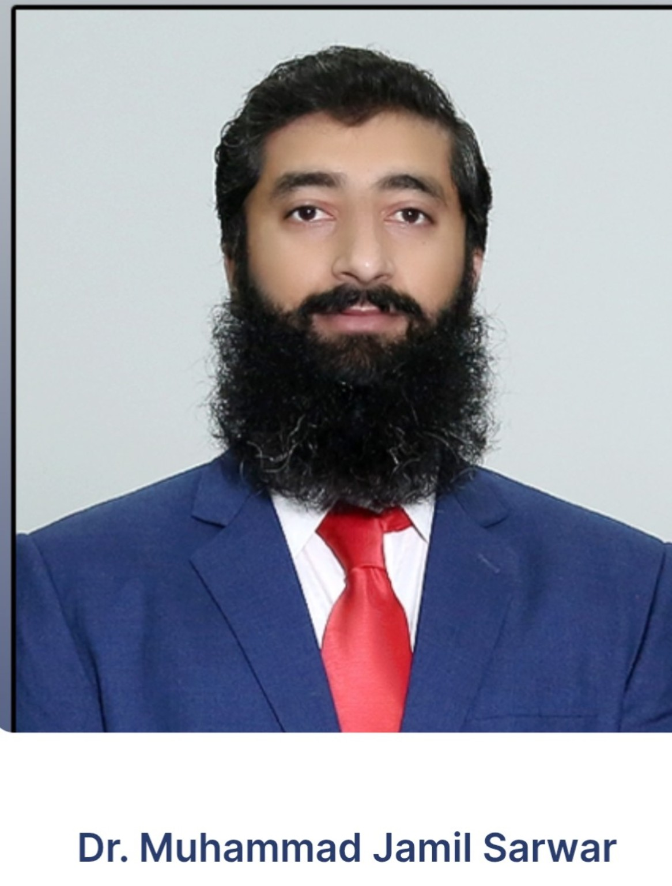

Brain Disorders
Brain tumors, epilepsy, hydrocephalus, persistent headaches and other neurological concerns.
CONSULTANT NEUROSURGEON • LAHORE
MD (USA) • FCPS (Neurosurgery)
Specialist in Brain & Spine Disorders, providing professional consultation for neurological and neurosurgical conditions.

ABOUT THE DOCTOR
Dr. Muhammad Jamil Sarwar is a Consultant Neurosurgeon with qualifications including MD (USA) and FCPS (Neurosurgery). His clinical focus includes disorders affecting the brain, spine, spinal cord and related nerves.
SPECIALIST CARE
Brain tumors, epilepsy, hydrocephalus, persistent headaches and other neurological concerns.
Back pain, sciatica, vertebral fractures, spinal tumors and spinal cord conditions.
Head and back injuries, spinal infections, abscesses and related complications.
CONDITIONS
Professional evaluation for a range of brain, spine, spinal cord and nerve-related conditions.
This website provides general information and is not a substitute for an in-person medical assessment. Diagnosis and treatment should be decided by a qualified doctor after appropriate evaluation.
CLINIC INFORMATION
For appointment booking, call Ittefaq Hospital at 042111770000.
Call for Appointment 📍 Get Directions to Ittefaq Hospital